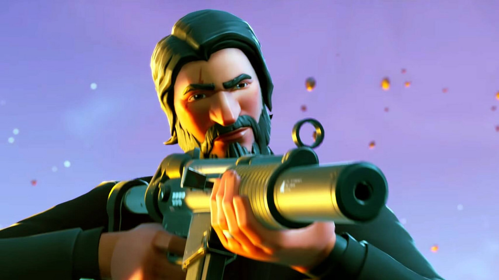

About me
My full name is Victor Samuel Mina Bedon. Everyone in my family calls me Samuel to not confuse me with my dad since im jr. I was born in Ecuador but currently live in Harlem. This page will let you know more about myself than I can tell you verbally, enjoy.
I currently go to NYC Museum School. The link is right below.
NYC Museum School website: https://www.nycmuseumschool.org
Fun Facts
One of my favorite things do aside from sleep is pkay video games such as fortnite. Sadly, my fortnite account got hacked so all my data got deleted. That means a lot of money wasted and new account starting new. Thats wack though, but now I can be Tfue :).
Actually, go subscribe to Tfue-> https://www.youtube.com/channel/UC9lSZSYpDDE18hoFA7YlBpw 
However, I don't like to stay home and play all day a lot. One of ,my most favorite things is to play soccer. My idol in soccer is Lionel Messi, since he's the best currently. I know no one will ever be as good as him but IO try to practice as much as I can to be my best. My goal is to be a starter for my school varsity team by junior year. Right now I get close to no playing time but just a freshman.

Another fun fact, is that I'm likely one of the best fifa players you know aside from pros. I.ve been playing that game since I was 6 but always have got beat by my brother. He's older than me and used to be beter than me in the game but not anymore. I rarely play as much but when i do play, i go off. But last year i started playing 2k. I'm alright at the game but definitely not bewtter than my cousin:(. But now I don't really play any game aside from Fortnite. But once, Anthem and the Division 2 came out, you won't catch me there.
Experiences
->Google Code Next->a summer program that turned into a 2 year coding program that I'm currently in. Every saturday with our own macs to be able to work at home.
->LMU-the varsity soccer team for my High School at Museum School. Lmu stands for Lab Musuem United since my school and the school above us in the building share the same team.
->FC Harlem-this was a soccer program I was in when I was younger and started playing.
-RedTails-> the swim team I was in for years since I was younger. It was very competitive but i had to leave sincde I was injured and currently am. After swimming for a while, my arm starts to hurt since the shoulder ligamet has a tear in it. Still emjoy swimming tho.
Contact Me at:
Phone: 347-636-9047
psn: timeforvic136
epic games: TXC_TIMEFORVIC->in all caps everything!
email: timeforvic@gmail.com